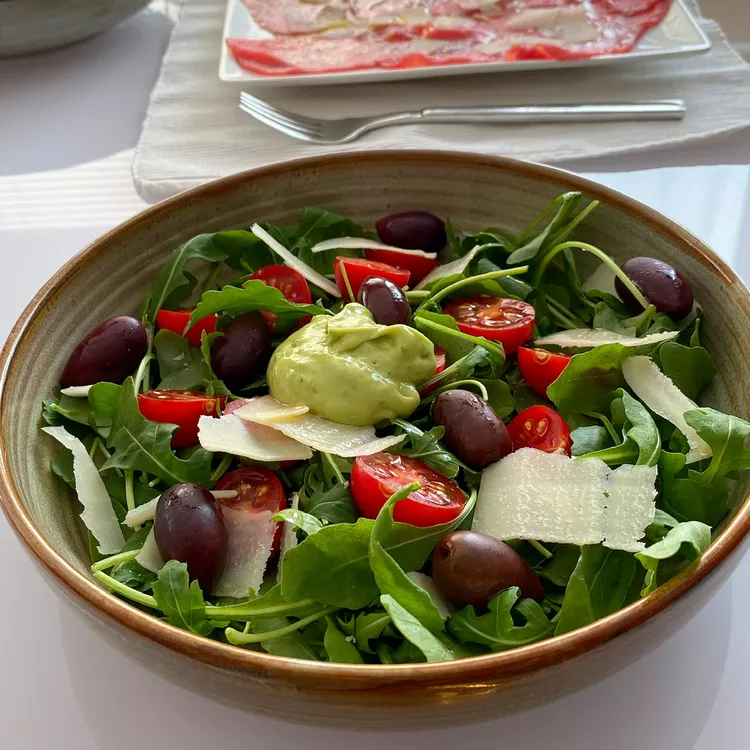

Arugula Salad

Arugula Salad with Avocado Vinaigrette
This is one of those recipes that takes about 10 minutes to prepare. Great salad to accompany your main meal.
Ingredients
- 1 avocado - peeled, pitted and diced
- ¼ cup chopped red onion
- 2 tablespoons fresh lime juice
- 2 tablespoons grapefruit juice
- 2 tablespoons rice wine vinegar
- ½ teaspoon ground black pepper
- ½ teaspoon sea salt
- ¼ cup olive oil
- 1 tablespoon honey
- 3 tablespoons chopped cilantro
- 1 leaf fresh mint, chopped
- 1 leaf fresh basil, chopped
- 2 ½ cups baby arugula leaves
- 2 ounces kalamata olives, pitted and halved
- 2 ounces cherry tomatoes, halved
- 2 tablespoons freshly shaved Parmesan cheese, or to taste
Instructions
- Place the avocado, red onion, lime juice, grapefruit juice, rice wine vinegar, black pepper, and sea salt in a blender, and
process until smooth, about 30 seconds. While the blender is running, drizzle in the olive oil; add honey, cilantro, mint,
and basil leaves, and process for a few more seconds to leave the herbs visible as small flecks.
- Toss the arugula, kalamata olives, and cherry tomatoes in a salad bowl; sprinkle with shaved Parmesan cheese. Pour Vinaigrette
over the salad, and toss to serve.